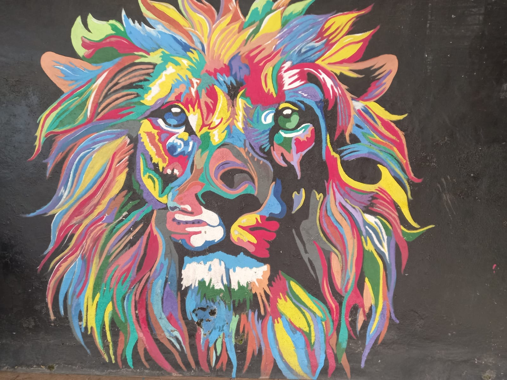
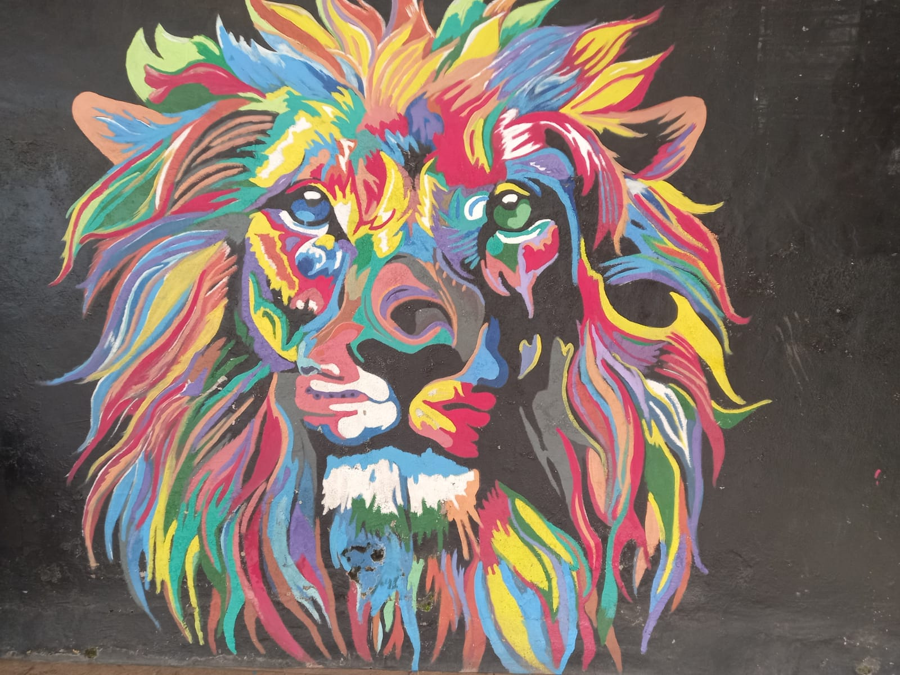

Abadikan Momen Penuh Warna
Jelajahi keindahan Kampung Jodipan melalui koleksi foto dan video kami.
Spot Foto Ikonik
Jangan lewatkan tempat-tempat ini untuk mengabadikan momen Anda!

Jembatan Kaca Embong Brantas
Uji adrenalin Anda sambil menikmati pemandangan 360 derajat terbaik dari seluruh kampung. Jembatan ikonik ini menghubungkan Kampung Warna-Warni dengan Kampung Tridi di seberangnya.

Tembok Aneka Warna
Inilah jiwa dari kampung kami. Ratusan rumah dengan puluhan kombinasi warna cerah menciptakan latar belakang foto yang sempurna di setiap sudut dan lorong yang Anda lewati.

Lorong Payung Gantung
Berjalan di bawah ratusan payung berwarna-warni yang menggantung meriah. Spot ini menciptakan suasana ceria dan menjadi salah satu lokasi favorit para pengunjung untuk berfoto.

Mural 3D Interaktif
Temukan berbagai lukisan mural tiga dimensi yang menipu mata. Berpose dan jadilah bagian dari karya seni! Setiap mural memiliki tema unik yang akan membuat foto Anda lebih hidup.
Lebih dari Sekadar Berfoto
Rasakan pengalaman otentik dengan berbagai aktivitas menarik.
Interaksi dengan Warga
Sapa dan berbincang dengan warga lokal yang ramah. Dengarkan cerita mereka tentang transformasi kampung dan rasakan kehangatan komunitas kami.
Cicipi Kuliner Lokal
Jangan lewatkan kesempatan untuk mencoba jajanan dan makanan khas yang dijual di warung-warung kecil milik warga. Temukan cita rasa otentik Jodipan!
Beli Kerajinan Tangan
Dukung ekonomi lokal dengan membeli suvenir dan kerajinan tangan yang dibuat langsung oleh warga kampung. Bawa pulang kenang-kenangan unik dari Jodipan.
Peta Interaktif Jodipan
Klik nama spot untuk melihat deskripsi dan lokasinya di peta.
/Jembatan kaca 2024.PNG) 

Jembatan Kaca
Spot ini adalah primadona utama. Berlokasi di tengah, menghubungkan dua kampung dan menjadi titik terbaik untuk melihat keseluruhan panorama.